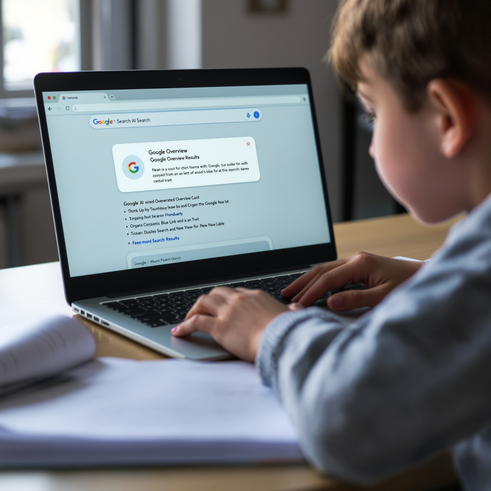
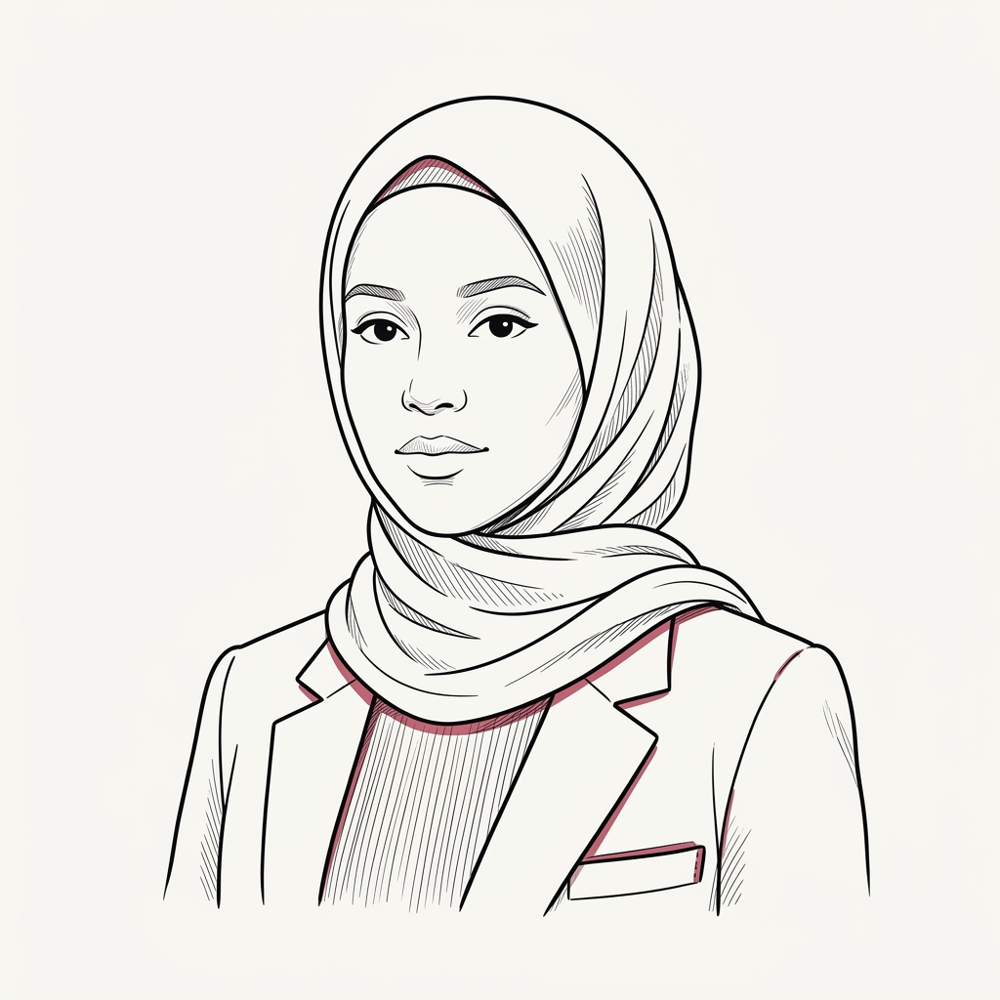

Ban it and you remove the only guided context some children will ever have. Step back and you leave them alone with a product designed to form attachment. Both moves harm the child.
Google Search puts AI-generated answers at the top of every homework result. No age gate. No parental decision required. As of May 2026, Google turned Gemini on by default for children under 13 in Family Link accounts.
The question has already shifted: not should my child use AI — but was I there when they first did?

HOMEWORKAge-appropriate limits within a framework of guided exposure are not the problem. Blanket avoidance without that framework is.
Child Mind Institute. Two or three signals together are a prompt for a direct conversation — and possibly professional support.

AR